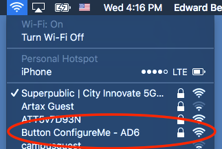
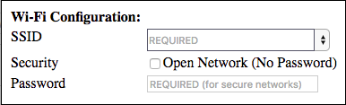
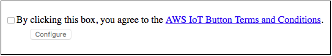
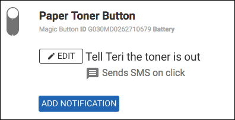
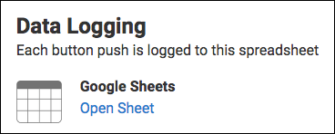

Buttonjoy Setup
Setting up your Buttonjoy Button is a snap, and you can change the settings at any time.
Connecting your Button to Wifi
When you get your button, you'll need to tell it how to connect to your WiFi network. This process involves another device such as a computer or phone. It looks like a lot of steps, but we promise it's easy.
- Activate Your Button's WiFi Network
Hold down on the button for about four seconds until you see a light blinking underneath our sticker. (The stickers for our first batch cover this light completely)
- Connect to the Button's Wifi Network
On your computer or phone, connect to the WiFi network the button just created. It will be named something like Button ConfigureMe - AD6. The letters at the end may be different.
The Wifi password is the final eight letters of the button's serial number, found on the back of the button.

- Visit the Button's Configuration Web Page
In your web browser, visit http://192.168.0.1/index.html.
- Select you normal WiFi network and enter the password
Fill out the form you see on that web page, then at the bottom, check the checkbox and click Configure.
Our goal is to enable creativity and productivity without any technical barriers to entry. That’s what Cloudstitch does for web development, and that’s what Buttonjoy is aims to do for the Internet of Things.

- You're done!
On your phone or computer, switch back to your regular WiFi network. Your button is ready to push.
Changing your Triggers
You can set your button to respond to three different kinds of pushes: single click, double click, and long click (2 seconds). These triggers can be changed in just a few seconds on cloudstitch.com, the service that powers Buttonjoy.
- Log in to Cloudstitch
If you don't already have an account, Buttonjoy created one for you. Just click on the forgot my password link, type in the email address you used with Buttonjoy, and we will mail you a password reset link.
- Open your Buttonjoy Project
When you log in, you will see a project folder called "Buttonjoy". Click it to open.
- Create and edit notifications!
Your Buttonjoy project contains a web interface for creating and changing the notifications your button will send under different conditions.

Tracking Data
Your button automatically records each click and click type to a spreadsheet associated with your account. To access this spreadsheet:
- Log in to Cloudstitch
If you don't already have an account, Buttonjoy created one for you. Just click on the forgot my password link, type in the email address you used with Buttonjoy, and we will mail you a password reset link.
- Open your Buttonjoy Project
When you log in, you will see a project folder called "Buttonjoy". Click it to open.
- Click "Open Sheet"
That's it. Track anything you want!

Questions
Please reach out with comments, press inquiries, and partnership questions to hello@buttonjoy.com.